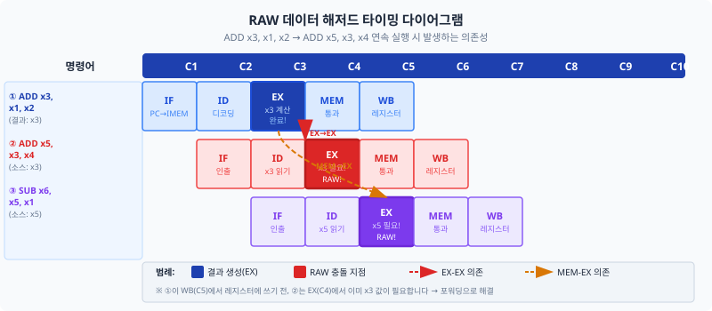
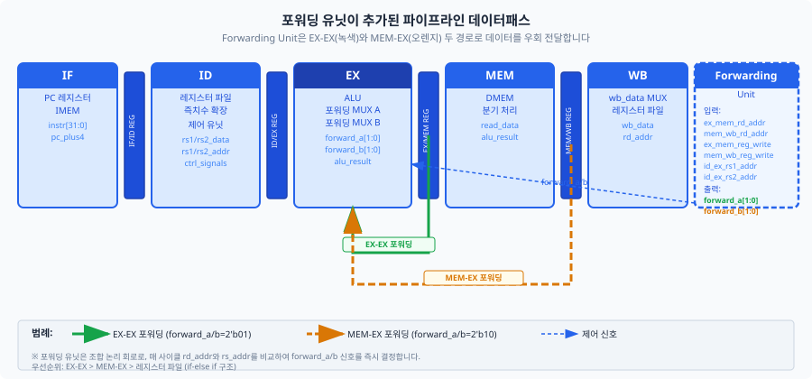
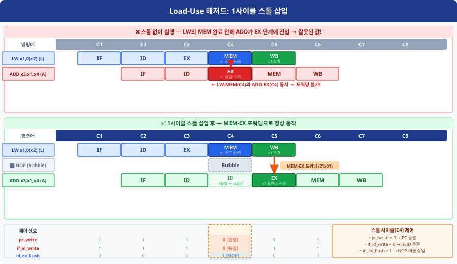
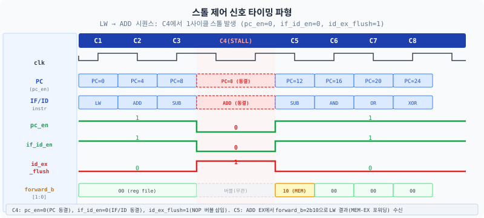

Ch09에서 우리는 연속된 명령어 사이에 NOP을 수동으로 삽입하여 파이프라인이 올바르게 동작하도록 했습니다.
이 챕터에서는 그 NOP 삽입의 이유였던 데이터 해저드(data hazard)를 정식으로 분류하고,
하드웨어가 스스로 해저드를 감지하고 처리하는 두 유닛 — 포워딩 유닛(forwarding unit)과
해저드 감지 유닛(hazard detection unit) — 을 설계합니다.
Ch09에서 예약해 둔 en, flush 포트가 드디어 실제 신호와 연결됩니다.
Ch09에서 우리는 다음과 같은 경험을 했습니다. ADD x1, x2, x3 다음에 ADD x4, x1, x5를
실행하면 x1의 값이 아직 레지스터 파일에 반영되지 않아 틀린 결과가 나왔습니다. 그래서 NOP을 3개 삽입했습니다.
그 NOP 삽입 행위의 정식 이름이 바로 데이터 해저드(data hazard)에 대한 소프트웨어 해결책입니다.
이 챕터에서는 그 작업을 하드웨어가 자동으로 처리하도록 만듭니다.
패스트푸드 주방을 상상해 보십시오. 다섯 직원이 일렬로 서서 ① 주문 확인 → ② 재료 꺼내기 → ③ 조리 → ④ 포장 → ⑤ 전달을 담당합니다. 조리 담당(③)이 방금 구운 패티를 포장 담당(④)에게 바로 건넬 수 있다면 창고(레지스터 파일)를 경유할 필요가 없습니다. 이것이 포워딩(forwarding, 우회 전달)입니다. 그런데 냉동 패티가 아직 해동 중이라면? 아무리 빠른 직원이라도 해동이 끝날 때까지 기다려야 합니다. 이것이 Load-Use 스톨(stall, 정지)입니다.
Ch09에서 우리가 NOP 3개를 삽입했던 그 경험 — 그것의 이름이 데이터 해저드(data hazard)입니다. 파이프라인에서 명령어들이 겹쳐 실행될 때, 한 명령어가 아직 결과를 생산하지 못한 상태에서 다음 명령어가 그 결과를 소비하려 할 때 발생합니다. 컴퓨터 구조 교과서는 데이터 해저드를 세 가지로 분류합니다.
RAW(Read After Write, 읽기-후-쓰기)는 명령어 i가 레지스터 r에 쓰기 전에, 이후 명령어 j가 같은 레지스터 r을 읽으려는 상황입니다. 파이프라인에서는 i의 WB 스테이지가 완료되기 전에 j가 ID 스테이지에서 r을 읽으면 오래된(stale) 값을 읽게 됩니다. Ch09의 NOP 삽입이 바로 이 문제를 피하기 위한 것이었습니다.

WAW(Write After Write, 쓰기-후-쓰기)는 두 명령어 i, j가 모두 같은 레지스터 r에 쓸 때, j의 쓰기가 i보다 먼저 완료되어 최종 값이 잘못되는 상황입니다. 그러나 RV32I의 인오더(in-order, 순서대로 처리하는) 파이프라인에서는 명령어 발행 순서대로 WB 스테이지에 도달하므로 i가 항상 j보다 먼저 WB를 완료합니다. 따라서 WAW는 발생하지 않습니다.
WAR(Write After Read, 쓰기-후-읽기)는 명령어 i가 레지스터 r을 읽기 전에, 이후 명령어 j가 r에 먼저 쓰는 상황입니다. 인오더 파이프라인에서는 i가 항상 j보다 ID(읽기) 스테이지를 먼저 지나가므로 WAR 역시 발생하지 않습니다.
5단 파이프라인(IF-ID-EX-MEM-WB)에서 RAW가 실제로 문제가 되는 경우는 두 가지 거리 패턴입니다.
포워딩(forwarding)이란 이미 계산된 결과를 레지스터 파일에 쓰기 전에 직접 다음 명령어의 ALU 입력으로 연결하는 기법입니다. Ch09에서 NOP을 3개 삽입해야 했던 이유는 레지스터 파일에 값이 쓰이기를 기다렸기 때문입니다. 포워딩을 사용하면 이 대기를 없앨 수 있습니다.
Ch09에서 ID/EX 파이프라인 레지스터에 rs1_addr과 rs2_addr 필드를
"Ch10 포워딩 유닛 준비"라는 주석과 함께 포함시켰습니다.
그 이유가 바로 이 절에서 드러납니다 — 포워딩 유닛은 현재 EX 스테이지의 소스 레지스터 번호와
앞선 스테이지의 목적 레지스터 번호를 비교해야 합니다.
rs1_addr_ex, rs2_addr_ex 없이는 포워딩 조건을 판단할 수 없습니다.

Ch09 파이프라인 구조에서 두 가지 포워딩 경로가 존재합니다.
alu_result을
현재 EX 스테이지의 ALU 입력으로 연결합니다. 1사이클 앞선 명령어의 결과를 즉시 활용합니다.
wb_data(WB 스테이지 MUX의 출력 — ALU 결과, 메모리 읽기 데이터, 또는 PC+4 중 하나를 선택한 최종 쓰기 값)를 EX 스테이지 ALU 입력으로 연결합니다.
2사이클 앞선 명령어의 결과를 활용합니다.
포워딩 유닛은 forward_a[1:0]과 forward_b[1:0] 두 신호를 출력합니다.
이 신호들은 EX 스테이지 앞에 놓인 MUX를 제어하여 ALU의 실제 입력을 선택합니다.
| 신호 값 | 선택 데이터 소스 | 의미 |
|---|---|---|
2'b00 | ID/EX 레지스터의 rs_data | 해저드 없음 — 레지스터 파일 값 사용 |
2'b01 | EX/MEM 레지스터의 alu_result | EX-EX 포워딩 (가장 최신 값, 우선순위 최고) |
2'b10 | MEM/WB 레지스터의 wb_data | MEM-EX 포워딩 (두 사이클 전 결과) |
EX-EX 포워딩이 필요한 조건을 자연어로 먼저 쓰면 다음과 같습니다:
ex_mem_reg_write == 1ex_mem_rd_addr != 5'b0ex_mem_rd_addr == id_ex_rs1_addr세 조건을 AND로 결합하면:
// EX-EX 포워딩 조건 (forward_a 기준)
ex_mem_reg_write && (ex_mem_rd_addr != 5'b0) && (ex_mem_rd_addr == id_ex_rs1_addr)
MEM-EX 포워딩도 같은 논리 구조입니다. 단, EX-EX 조건이 이미 성립하지 않는 경우에만 적용합니다:
// MEM-EX 포워딩 조건 (EX-EX 미성립 시)
mem_wb_reg_write && (mem_wb_rd_addr != 5'b0) && (mem_wb_rd_addr == id_ex_rs1_addr)
두 포워딩 조건이 동시에 만족될 수 있습니다. 예를 들어 연속된 세 명령어가 모두 같은 레지스터에
의존하는 경우입니다. 이때는 더 최신 값인 EX-EX 포워딩이 우선합니다.
if-else if 구조를 사용하여 EX-EX를 먼저 검사합니다.
// ============================================================
// 파일: forwarding_unit.sv
// 설명: EX 스테이지 포워딩 MUX 제어 신호 생성
// forward_a/b 인코딩:
// 2'b00 = 포워딩 없음 (레지스터 파일 값)
// 2'b01 = EX-EX 포워딩 (EX/MEM.alu_result) ← 우선순위 높음
// 2'b10 = MEM-EX 포워딩 (MEM/WB wb_data)
// ============================================================
module forwarding_unit (
input logic [4:0] id_ex_rs1_addr, // 현재 EX 소스1 레지스터 주소
input logic [4:0] id_ex_rs2_addr, // 현재 EX 소스2 레지스터 주소
input logic [4:0] ex_mem_rd_addr, // EX/MEM 목적 레지스터 주소
input logic [4:0] mem_wb_rd_addr, // MEM/WB 목적 레지스터 주소
input logic ex_mem_reg_write, // EX/MEM 단계 reg_write
input logic mem_wb_reg_write, // MEM/WB 단계 reg_write
output logic [1:0] forward_a, // rs1 포워딩 선택
output logic [1:0] forward_b // rs2 포워딩 선택
);
// ---- forward_a: rs1 포워딩 ----
always_comb begin
// 자연어: "EX/MEM 단계가 reg_write=1이고, rd가 x0이 아니며, rd==rs1인가?"
if (ex_mem_reg_write &&
(ex_mem_rd_addr != 5'b0) &&
(ex_mem_rd_addr == id_ex_rs1_addr))
forward_a = 2'b01; // EX-EX 포워딩 (우선순위 최고)
// 자연어: "MEM/WB 단계가 reg_write=1이고, rd가 x0이 아니며, rd==rs1인가?"
else if (mem_wb_reg_write &&
(mem_wb_rd_addr != 5'b0) &&
(mem_wb_rd_addr == id_ex_rs1_addr))
forward_a = 2'b10; // MEM-EX 포워딩
else
forward_a = 2'b00; // 포워딩 없음
end
// ---- forward_b: rs2 포워딩 ----
always_comb begin
if (ex_mem_reg_write &&
(ex_mem_rd_addr != 5'b0) &&
(ex_mem_rd_addr == id_ex_rs2_addr))
forward_b = 2'b01; // EX-EX 포워딩 (우선순위 최고)
else if (mem_wb_reg_write &&
(mem_wb_rd_addr != 5'b0) &&
(mem_wb_rd_addr == id_ex_rs2_addr))
forward_b = 2'b10; // MEM-EX 포워딩
else
forward_b = 2'b00; // 포워딩 없음
end
endmodule
포워딩 유닛이 생성한 forward_a, forward_b 신호로 EX 스테이지 앞에
MUX를 삽입합니다. Ch09의 ALU 입력 선택 로직을 다음과 같이 수정합니다.
// ① 포워딩 MUX — EX 스테이지 입력 직전
logic [31:0] rs1_fwd_ex, rs2_fwd_ex;
always_comb begin
// rs1 포워딩 MUX
case (forward_a)
2'b01: rs1_fwd_ex = alu_result_mem; // EX-EX: EX/MEM.alu_result
2'b10: rs1_fwd_ex = wb_data; // MEM-EX: MEM/WB wb_data
default: rs1_fwd_ex = rs1_data_ex; // 포워딩 없음
endcase
// rs2 포워딩 MUX
case (forward_b)
2'b01: rs2_fwd_ex = alu_result_mem; // EX-EX: EX/MEM.alu_result
2'b10: rs2_fwd_ex = wb_data; // MEM-EX: MEM/WB wb_data
default: rs2_fwd_ex = rs2_data_ex; // 포워딩 없음
endcase
end
// ② ALU 입력 MUX (포워딩된 값 사용)
assign alu_a_ex = ctrl_ex.alu_src_a ? pc_ex : rs1_fwd_ex;
assign alu_b_ex = ctrl_ex.alu_src_b ? imm_ext_ex : rs2_fwd_ex;
// ③ Store 명령어의 메모리 쓰기 데이터도 포워딩 필수
// EX/MEM 레지스터에 rs2_data 저장 시 rs2_fwd_ex를 사용해야 합니다
// (Ch09: .rs2_data_in(rs2_data_ex) → Ch10: .rs2_data_in(rs2_fwd_ex))
포워딩은 RAW 해저드의 대부분을 처리하지만, Load-Use 해저드라는 예외가 있습니다. 신호등 비유를 생각해 보십시오. 교차로에서 신호가 빨간색이면 아무리 급해도 기다려야 합니다. 포워딩은 "이미 있는 것을 빠르게 전달"하는 기법입니다. 그런데 LW 명령어는 데이터를 메모리에서 읽어야 합니다 — MEM 스테이지가 끝나야 비로소 데이터가 존재합니다. 1사이클만 기다리면 됩니다. 그 1사이클이 Load-Use 스톨입니다.

그림 10.3의 위 패널에서 LW(i)는 사이클 C4(MEM 스테이지)에서 read_data를 생산합니다.
ADD(i+1)가 스톨 없이 진행하면 사이클 C4에 EX 스테이지에 있어야 합니다. 이때 MEM-EX 포워딩 경로는
MEM/WB 레지스터에서 데이터를 가져오는데, 이 레지스터는 C4 클럭 상승 엣지에서 업데이트됩니다 —
즉 C5에야 값을 읽을 수 있습니다. 따라서 C4의 EX에서 LW 결과를 사용하는 것은 물리적으로 불가능합니다.
Load-Use 해저드를 감지하는 조건은 다음과 같습니다. ID/EX 레지스터에 있는 명령어가 LW 계열이고, 그 목적 레지스터가 현재 IF/ID 레지스터 명령어의 소스 레지스터(rs1 또는 rs2)와 일치하면 스톨을 발생시킵니다.
// ============================================================
// 파일: hazard_detection_unit.sv
// 설명: Load-Use 해저드 감지 — stall 신호 생성
// stall=1이면 PC/IF_ID 홀드, ID/EX 플러시(NOP 버블)
// ============================================================
module hazard_detection_unit (
input logic [4:0] id_ex_rd_addr, // ID/EX 목적 레지스터 (rd)
input logic id_ex_mem_read, // ID/EX의 mem_read 신호 (LW 여부)
input logic [4:0] if_id_rs1_addr, // IF/ID 명령어[19:15] = rs1 주소
input logic [4:0] if_id_rs2_addr, // IF/ID 명령어[24:20] = rs2 주소
output logic stall // 1 = 스톨 발생
);
// 조건: ① EX 단계가 LW(mem_read=1)이며
// ② rd가 x0이 아니고
// ③ rd가 ID 단계 rs1 또는 rs2와 일치
assign stall = id_ex_mem_read &&
(id_ex_rd_addr != 5'b0) &&
((id_ex_rd_addr == if_id_rs1_addr) ||
(id_ex_rd_addr == if_id_rs2_addr));
endmodule
stall = 1이 되면 파이프라인에서 세 가지 일이 동시에 일어납니다.
| 대상 | 동작 | 효과 |
|---|---|---|
| PC 레지스터 | 업데이트 중지 (pc_en = ~stall) | 같은 명령어 주소 재사용 |
| IF/ID 레지스터 | 업데이트 중지 (en = ~stall) | ID 단계 명령어 유지 |
| ID/EX 레지스터 | 플러시 (flush = stall) | EX에 NOP 버블 삽입 |
| EX/MEM, MEM/WB | 정상 진행 | 앞선 명령어들은 계속 완료 |
Ch09에서 파이프라인 레지스터들에 en=1'b1, flush=1'b0을 예약 포트로
연결해 두었습니다. 이 절에서는 드디어 그 포트들을 실제 스톨 신호와 연결합니다.
Ch09에서 "Ch10에서 연결 예정"이라고 주석을 달았던 코드가 완성되는 순간입니다.

| 파이프라인 레지스터 | en | flush | 비고 |
|---|---|---|---|
| PC 레지스터 | ~stall | N/A | 스톨 시 현재 PC 유지 (같은 명령어 재인출) |
| IF/ID | ~stall | 1'b0 | 스톨 시 현재 명령어 유지; Ch11에서 flush 활성화 |
| ID/EX | 1'b1 | stall | 스톨 시 모든 필드를 0으로 → NOP 버블 |
| EX/MEM | 1'b1 | 1'b0 | Ch11에서 flush 활성화 예정 |
| MEM/WB | 1'b1 | N/A | 변경 없음 |
pc_en=0과 if_id_en=0은 파이프라인 레지스터의 이네이블(enable) 신호를 끄는 것입니다. 이네이블이 0이면 클럭이 상승해도 레지스터 내용이 유지(동결)됩니다. 반면 id_ex_flush=1은 레지스터를 클리어하여 모든 제어 신호를 0으로 만드는 것입니다 — NOP 버블을 삽입하는 효과입니다. 동결과 버블 삽입은 전혀 다른 동작입니다.
ID/EX 레지스터에서 flush=1이면 en=1이더라도 내용이 0으로 클리어됩니다.
Ch09에서 설계한 always_ff 블록의 if (rst || flush) ... else if (en) 패턴이
이 우선순위를 보장합니다. NOP 버블이 삽입되면 모든 제어 신호(mem_read 포함)가 0이 됩니다.
이것이 중요합니다 — mem_read=0이어야 NOP 버블이 무한 스톨을 유발하지 않습니다.
// id_ex_reg 내부 — Ch09 설계 확인 (flush > en 우선순위)
always_ff @(posedge clk or posedge rst) begin
if (rst || flush) begin
// NOP 버블: 모든 제어 신호 0 (mem_read=0 필수!)
ctrl_out <= '0;
rs1_data_out <= 32'd0;
rs2_data_out <= 32'd0;
imm_ext_out <= 32'd0;
pc_out <= 32'd0;
pc_plus4_out <= 32'd0;
rs1_addr_out <= 5'd0;
rs2_addr_out <= 5'd0;
rd_addr_out <= 5'd0;
end else if (en) begin
ctrl_out <= ctrl_in;
rs1_data_out <= rs1_data_in;
rs2_data_out <= rs2_data_in;
imm_ext_out <= imm_ext_in;
pc_out <= pc_in;
pc_plus4_out <= pc_plus4_in;
rs1_addr_out <= rs1_addr_in;
rs2_addr_out <= rs2_addr_in;
rd_addr_out <= rd_addr_in;
end
end
// flush가 en보다 우선순위 높음 → NOP 버블 삽입 시 mem_read=0 보장
이 절에서는 포워딩 유닛과 해저드 감지 유닛이 올바르게 동작하는지 7가지 RAW 시나리오로 검증합니다.
각 시나리오는 독립적으로 실행하여 forward_a, forward_b, stall
신호를 파형에서 확인합니다.
| 번호 | 시나리오 | 명령어 시퀀스 | 검증 포인트 |
|---|---|---|---|
| T1 | EX-EX 포워딩 (rs1) | ADD x1,x2,x3 → ADD x4,x1,x5 |
forward_a=2'b01, 스톨 없음 |
| T2 | EX-EX 포워딩 (rs2) | ADD x1,x2,x3 → ADD x4,x5,x1 |
forward_b=2'b01, 스톨 없음 |
| T3 | MEM-EX 포워딩 (1개 NOP 사이) | ADD x1,x2,x3 → NOP → ADD x4,x1,x5 |
forward_a=2'b10, 스톨 없음 |
| T4 | EX-EX 우선순위 | ADD x1,x2,x3 → ADD x1,x4,x5 → ADD x6,x1,x7 |
forward_a=2'b01 (EX/MEM 값 선택) |
| T5 | 해저드 없음 (3개 NOP 사이) | ADD x1,x2,x3 → NOP×3 → ADD x4,x1,x5 |
forward_a=2'b00, 스톨 없음 |
| T6 | Load-Use 스톨 | LW x1,0(x6) → ADD x3,x1,x4 |
stall=1 1사이클, 이후 forward_a=2'b10 |
| T7 | Store 포워딩 | ADD x1,x2,x3 → SW x1,0(x4) |
forward_b=2'b01 (rs2=x1 포워딩) |
# VCS 컴파일 및 시뮬레이션
vcs -sverilog -debug_all \
forwarding_unit.sv \
hazard_detection_unit.sv \
rv32i_pipeline_top_ch10.sv \
rv32i_pipeline_tb_ch10.sv \
-o sim_ch10
# 실행
./sim_ch10
# Verdi로 파형 확인
verdi -ssf rv32i_pipeline_tb_ch10.vcd &Ch01부터 이 챕터까지 — ISA, RTL 기초, 단일사이클, 멀티사이클, 파이프라인 기초, 그리고 포워딩. 이제 이 모든 것이 하나로 합쳐지는 순간입니다. 1부터 10까지의 합은 55입니다. 55 = Ch01~Ch10의 합. 이 프로그램이 포워딩 파이프라인에서 올바르게 실행된다면, 여러분은 데이터 해저드를 스스로 해결하는 파이프라인 프로세서를 설계한 것입니다.
분기 명령어 없이 루프를 언롤(unroll, 펼치기)한 직선 코드입니다.
ADD x10,x10,x11 명령어에서 rs1(x10)은 이전 ADD의 결과이므로 MEM-EX 포워딩,
rs2(x11)은 방금 완료된 ADDI의 결과이므로 EX-EX 포워딩이 동시에 발생합니다.
프로그램 끝의 ADDI x13,x12,0에서 Load-Use 해저드가 1사이클 스톨을 유발합니다.
; ============================================================
; 1~10 합산 (루프 언롤 버전, 분기 없음)
; 레지스터: x10=sum(합계), x11=i(현재값), x12=메모리 검증, x13=Load-Use 검증
; 기대 결과: x10=55, x12=55, x13=55
; ============================================================
ADDI x10, x0, 0 ; x10 = 0 (합계 초기화)
ADDI x11, x0, 1 ; x11 = 1
ADD x10, x10, x11 ; x10 = 0+1 = 1 <-- EX-EX 포워딩(forward_b=2'b01): ADDI x11 결과가 EX/MEM에 있음
ADDI x11, x11, 1 ; x11 = 2 <-- EX-EX 포워딩(forward_a=2'b01): ADD x10 결과가 EX/MEM에 있음
ADD x10, x10, x11 ; x10 = 1+2 = 3 <-- rs1(x10): MEM-EX 포워딩(forward_a=2'b10), rs2(x11): EX-EX 포워딩(forward_b=2'b01) 동시 발생
ADDI x11, x11, 1 ; x11 = 3
ADD x10, x10, x11 ; x10 = 3+3 = 6
ADDI x11, x11, 1 ; x11 = 4
ADD x10, x10, x11 ; x10 = 6+4 = 10
ADDI x11, x11, 1 ; x11 = 5
ADD x10, x10, x11 ; x10 = 10+5 = 15
ADDI x11, x11, 1 ; x11 = 6
ADD x10, x10, x11 ; x10 = 15+6 = 21
ADDI x11, x11, 1 ; x11 = 7
ADD x10, x10, x11 ; x10 = 21+7 = 28
ADDI x11, x11, 1 ; x11 = 8
ADD x10, x10, x11 ; x10 = 28+8 = 36
ADDI x11, x11, 1 ; x11 = 9
ADD x10, x10, x11 ; x10 = 36+9 = 45
ADDI x11, x11, 1 ; x11 = 10
ADD x10, x10, x11 ; x10 = 45+10 = 55 <-- 최종 결과
SW x10, 0(x0) ; mem[0] = 55 <-- EX-EX 포워딩 (forward_b=2'b01): ADD 결과 x10이 EX/MEM에 있음
LW x12, 0(x0) ; x12 = mem[0] = 55
ADDI x13, x12, 0 ; x13 = x12 = 55 <-- Load-Use 해저드! 1사이클 스톨
| 주소 | 기계어 | 어셈블리 | 비고 |
|---|---|---|---|
| 0x00 | 0x00000513 | ADDI x10, x0, 0 | sum=0 |
| 0x04 | 0x00100593 | ADDI x11, x0, 1 | i=1 |
| 0x08 | 0x00B50533 | ADD x10, x10, x11 | sum=1, EX-EX |
| 0x0C | 0x00158593 | ADDI x11, x11, 1 | i=2, EX-EX |
| 0x10 | 0x00B50533 | ADD x10, x10, x11 | sum=3 |
| 0x14 | 0x00158593 | ADDI x11, x11, 1 | i=3 |
| 0x18 | 0x00B50533 | ADD x10, x10, x11 | sum=6 |
| 0x1C | 0x00158593 | ADDI x11, x11, 1 | i=4 |
| 0x20 | 0x00B50533 | ADD x10, x10, x11 | sum=10 |
| 0x24 | 0x00158593 | ADDI x11, x11, 1 | i=5 |
| 0x28 | 0x00B50533 | ADD x10, x10, x11 | sum=15 |
| 0x2C | 0x00158593 | ADDI x11, x11, 1 | i=6 |
| 0x30 | 0x00B50533 | ADD x10, x10, x11 | sum=21 |
| 0x34 | 0x00158593 | ADDI x11, x11, 1 | i=7 |
| 0x38 | 0x00B50533 | ADD x10, x10, x11 | sum=28 |
| 0x3C | 0x00158593 | ADDI x11, x11, 1 | i=8 |
| 0x40 | 0x00B50533 | ADD x10, x10, x11 | sum=36 |
| 0x44 | 0x00158593 | ADDI x11, x11, 1 | i=9 |
| 0x48 | 0x00B50533 | ADD x10, x10, x11 | sum=45 |
| 0x4C | 0x00158593 | ADDI x11, x11, 1 | i=10 |
| 0x50 | 0x00B50533 | ADD x10, x10, x11 | sum=55 |
| 0x54 | 0x00A02023 | SW x10, 0(x0) | mem[0]=55, EX-EX(forward_b=2'b01) |
| 0x58 | 0x00002603 | LW x12, 0(x0) | x12=55 |
| 0x5C | 0x00060693 | ADDI x13, x12, 0 | Load-Use 스톨! |
시뮬레이션 종료 후 레지스터 값이 다음과 같아야 합니다:
regs[10] = 32'h00000037 (십진수 55) — EX-EX 포워딩 동작 확인regs[12] = 32'h00000037 (십진수 55) — SW/LW 메모리 접근 확인regs[13] = 32'h00000037 (십진수 55) — Load-Use 스톨 + MEM-EX 포워딩 확인
파형에서 forward_a = 2'b01이 주기적으로 표시되는 순간, 여러분의 포워딩 유닛이
정확히 동작하고 있다는 증거입니다. 스톨 없이 ADD 명령어들을 연속 실행하면서 올바른 값 55에 도달한다면,
데이터 해저드를 스스로 해결하는 파이프라인 프로세서를 여러분이 설계한 것입니다.
파형에서 최종 레지스터 x10에 0x00000037 — 십진수로 55 — 가 나타난다면, 잠시 멈추고 이 순간을 의식적으로 느껴 보십시오.
1부터 10까지의 합이 55입니다. 그리고 여러분은 Chapter 01부터 Chapter 10까지 지식을 쌓아 이 결과를 만들어냈습니다. NOP이 하나도 없는 코드가, 여러분이 직접 설계한 포워딩 유닛 덕분에 정확하게 실행되었습니다. Ch09에서 NOP 3개를 손으로 계산해서 삽입했던 그 불편함이 지금 완전히 사라졌습니다. 이것이 여러분의 하드웨어가 한 일입니다.
이 챕터에서는 파이프라인의 핵심 과제인 데이터 해저드를 완전히 처리했습니다.
RAW 해저드를 이론적으로 분류하고, 포워딩 유닛과 해저드 감지 유닛을 설계하여 하드웨어에 구현했습니다.
Ch09에서 예약해 두었던 en/flush 포트들이 의미 있는 신호로 연결되었고,
파이프라인은 이제 소프트웨어(NOP 삽입) 도움 없이 스스로 데이터 의존성을 처리합니다.
2'b00=레지스터 파일, 2'b01=EX-EX(EX/MEM.alu_result), 2'b10=MEM-EX(MEM/WB wb_data).forward_a = 2'b01과 2'b10이 각각 어느 파이프라인
레지스터에서 데이터를 가져오는지 설명하고, 두 조건이 동시에 만족될 때 EX-EX를 선택해야 하는 이유를
프로그램 의미(semantics) 관점에서 서술하십시오.
forward_a와 forward_b의 값을 사이클별로 기입하십시오.
ADD x1, x2, x3 ; 명령어 A
SUB x4, x1, x5 ; 명령어 B
AND x6, x1, x4 ; 명령어 C
read_data가 어느 파이프라인 레지스터에
존재하는지 추적하십시오.
LW x1, 0(x2) ; 사이클 1에 IF
ADD x3, x1, x4 ; 사이클 2에 IF
forward_a, forward_b, stall 값을 표로 작성하고,
Ch09에서 이 코드를 올바르게 실행하려면 NOP을 몇 개 삽입해야 했는지와 비교하십시오.
LW x1, 0(x2) ; 사이클 1에 IF
ADD x3, x1, x4 ; 사이클 2에 IF
SUB x5, x3, x1 ; 사이클 3에 IF
LW x1, 0(x2)
ADD x3, x1, x4 ; Load-Use 해저드
LW x5, 4(x2)
ADD x6, x5, x4 ; Load-Use 해저드
이 챕터에서 단계별로 설명한 모든 모듈의 완전한 소스 코드입니다. 본문에서 이미 각 코드의 동작 원리를 설명하였으므로, 지금 당장 전부를 이해하려 하지 않아도 됩니다. 이 코드는 Ch11에서 제어 해저드 처리를 추가할 때 기반으로 사용됩니다. 참고용으로 활용하십시오.
// ============================================================
// 파일: forwarding_unit.sv
// 설명: EX 스테이지 포워딩 MUX 제어 신호 생성
// forward_a/b 인코딩:
// 2'b00 = 포워딩 없음 (레지스터 파일 값)
// 2'b01 = EX-EX 포워딩 (EX/MEM.alu_result) ← 우선순위 높음
// 2'b10 = MEM-EX 포워딩 (MEM/WB wb_data)
// 우선순위: EX-EX(01) > MEM-EX(10) (if-else if 구조)
// ============================================================
module forwarding_unit (
input logic [4:0] id_ex_rs1_addr, // 현재 EX 소스1 레지스터 주소 (rs1)
input logic [4:0] id_ex_rs2_addr, // 현재 EX 소스2 레지스터 주소 (rs2)
input logic [4:0] ex_mem_rd_addr, // EX/MEM 목적 레지스터 주소
input logic [4:0] mem_wb_rd_addr, // MEM/WB 목적 레지스터 주소
input logic ex_mem_reg_write, // EX/MEM 단계 레지스터 쓰기 활성화
input logic mem_wb_reg_write, // MEM/WB 단계 레지스터 쓰기 활성화
output logic [1:0] forward_a, // rs1 포워딩 선택 신호
output logic [1:0] forward_b // rs2 포워딩 선택 신호
);
// ---- forward_a: rs1 포워딩 ----
always_comb begin
// EX-EX 포워딩 조건 (우선순위 최고)
if (ex_mem_reg_write &&
(ex_mem_rd_addr != 5'b0) &&
(ex_mem_rd_addr == id_ex_rs1_addr))
forward_a = 2'b01; // EX-EX: EX/MEM.alu_result 사용
// MEM-EX 포워딩 조건 (EX-EX 미성립 시)
else if (mem_wb_reg_write &&
(mem_wb_rd_addr != 5'b0) &&
(mem_wb_rd_addr == id_ex_rs1_addr))
forward_a = 2'b10; // MEM-EX: MEM/WB wb_data 사용
else
forward_a = 2'b00; // 포워딩 없음: 레지스터 파일 값 사용
end
// ---- forward_b: rs2 포워딩 ----
always_comb begin
// EX-EX 포워딩 조건 (우선순위 최고)
if (ex_mem_reg_write &&
(ex_mem_rd_addr != 5'b0) &&
(ex_mem_rd_addr == id_ex_rs2_addr))
forward_b = 2'b01; // EX-EX: EX/MEM.alu_result 사용
// MEM-EX 포워딩 조건 (EX-EX 미성립 시)
else if (mem_wb_reg_write &&
(mem_wb_rd_addr != 5'b0) &&
(mem_wb_rd_addr == id_ex_rs2_addr))
forward_b = 2'b10; // MEM-EX: MEM/WB wb_data 사용
else
forward_b = 2'b00; // 포워딩 없음
end
endmodule
// ============================================================
// 파일: hazard_detection_unit.sv
// 설명: Load-Use 해저드 감지 유닛
// stall=1이면:
// - PC en=0 (PC 동결)
// - IF/ID en=0 (명령어 동결)
// - ID/EX flush=1 (NOP 버블 삽입)
// ============================================================
module hazard_detection_unit (
input logic [4:0] id_ex_rd_addr, // ID/EX 목적 레지스터 주소
input logic id_ex_mem_read, // ID/EX mem_read (LW 여부)
input logic [4:0] if_id_rs1_addr, // IF/ID 명령어[19:15] = rs1
input logic [4:0] if_id_rs2_addr, // IF/ID 명령어[24:20] = rs2
output logic stall // 1 = Load-Use 스톨 발생
);
// Load-Use 해저드 감지 조건:
// ① EX 단계 명령어가 LW 계열 (mem_read=1)
// ② EX 목적 레지스터(rd)가 x0이 아님
// ③ EX rd가 ID 단계 rs1 또는 rs2와 일치
assign stall = id_ex_mem_read &&
(id_ex_rd_addr != 5'b0) &&
((id_ex_rd_addr == if_id_rs1_addr) ||
(id_ex_rd_addr == if_id_rs2_addr));
endmodule
// ============================================================
// 파일: rv32i_pipeline_top_ch10.sv
// 설명: RV32I 5단 파이프라인 최상위 모듈 (Ch10 완성판)
// Ch09 대비 변경사항:
// 1) forwarding_unit 인스턴스 추가
// 2) hazard_detection_unit 인스턴스 추가
// 3) 포워딩 MUX (rs1_fwd_ex, rs2_fwd_ex) 추가
// 4) PC: always_ff en=~stall
// 5) IF/ID: en=~stall (Ch09: 1'b1 → Ch10: ~stall)
// 6) ID/EX: flush=stall (Ch09: 1'b0 → Ch10: stall)
// 7) EX/MEM: rs2_data_in = rs2_fwd_ex (Store 포워딩)
// ============================================================
module rv32i_pipeline_top_ch10 (
input logic clk,
input logic rst
);
import rv32i_pkg::*; // ctrl_t 구조체 정의
// ============================================================
// 내부 신호 선언
// ============================================================
// IF 스테이지
logic [31:0] pc_reg, pc_next, pc_plus4;
logic [31:0] imem_rdata;
// IF/ID 레지스터 출력
logic [31:0] instr_id, pc_id, pc_plus4_id;
// ID 스테이지
logic [4:0] rs1_addr_id, rs2_addr_id, rd_addr_id;
logic [31:0] rs1_data_id, rs2_data_id, imm_ext_id;
ctrl_t ctrl_id;
// ID/EX 레지스터 출력
logic [31:0] rs1_data_ex, rs2_data_ex, imm_ext_ex, pc_ex, pc_plus4_ex;
logic [4:0] rs1_addr_ex, rs2_addr_ex, rd_addr_ex;
ctrl_t ctrl_ex;
// EX 스테이지
logic [31:0] rs1_fwd_ex, rs2_fwd_ex; // 포워딩 MUX 출력
logic [31:0] alu_a_ex, alu_b_ex, alu_result_ex;
logic zero_ex, branch_taken_ex;
logic [1:0] forward_a, forward_b; // 포워딩 제어 신호
// EX/MEM 레지스터 출력
logic [31:0] alu_result_mem, rs2_data_mem, pc_plus4_mem;
logic [4:0] rd_addr_mem;
ctrl_t ctrl_mem;
// MEM 스테이지
logic [31:0] read_data_mem;
// MEM/WB 레지스터 출력
logic [31:0] read_data_wb, alu_result_wb, pc_plus4_wb;
logic [4:0] rd_addr_wb;
ctrl_t ctrl_wb;
// WB 스테이지
logic [31:0] wb_data;
// 스톨 신호
logic stall;
// ============================================================
// IF 스테이지
// ============================================================
assign pc_plus4 = pc_reg + 32'd4;
assign pc_next = pc_plus4; // Ch11에서 분기 MUX 추가 예정
// PC 레지스터 — Ch10: stall 시 홀드
always_ff @(posedge clk or posedge rst) begin
if (rst) pc_reg <= 32'd0;
else if (~stall) pc_reg <= pc_next; // stall=1이면 PC 유지
end
// 명령어 메모리 (조합논리, LUTRAM 추론)
imem u_imem (
.addr (pc_reg),
.rdata (imem_rdata)
);
// ============================================================
// IF/ID 파이프라인 레지스터
// Ch10: en = ~stall (Ch09: en=1'b1)
// ============================================================
if_id_reg u_if_id (
.clk (clk),
.rst (rst),
.en (~stall), // ★ Ch09: 1'b1 → Ch10: ~stall
.flush (1'b0), // Ch11: 분기 플러시 시 활성화 예정
.instr_in (imem_rdata),
.pc_in (pc_reg),
.pc_plus4_in (pc_plus4),
.instr_out (instr_id),
.pc_out (pc_id),
.pc_plus4_out (pc_plus4_id)
);
// ============================================================
// ID 스테이지
// ============================================================
assign rs1_addr_id = instr_id[19:15];
assign rs2_addr_id = instr_id[24:20];
assign rd_addr_id = instr_id[11:7];
// 레지스터 파일 (WB에서 쓰기, ID에서 읽기)
regfile u_regfile (
.clk (clk),
.we (ctrl_wb.reg_write),
.waddr (rd_addr_wb),
.wdata (wb_data),
.raddr1 (rs1_addr_id),
.raddr2 (rs2_addr_id),
.rdata1 (rs1_data_id),
.rdata2 (rs2_data_id)
);
// 즉치수 확장
imm_extend u_imm_ext (
.instr (instr_id),
.imm (imm_ext_id)
);
// 제어 신호 생성
control_unit u_ctrl (
.opcode (instr_id[6:0]),
.funct3 (instr_id[14:12]),
.funct7 (instr_id[31:25]),
.ctrl (ctrl_id)
);
// ============================================================
// Hazard Detection Unit (Ch10 신규)
// ============================================================
hazard_detection_unit u_hdu (
.id_ex_rd_addr (rd_addr_ex),
.id_ex_mem_read (ctrl_ex.mem_read),
.if_id_rs1_addr (instr_id[19:15]),
.if_id_rs2_addr (instr_id[24:20]),
.stall (stall)
);
// ============================================================
// ID/EX 파이프라인 레지스터
// Ch10: flush = stall (Ch09: flush=1'b0)
// ============================================================
id_ex_reg u_id_ex (
.clk (clk),
.rst (rst),
.en (1'b1), // 항상 활성화
.flush (stall), // ★ Ch09: 1'b0 → Ch10: stall
.rs1_data_in (rs1_data_id),
.rs2_data_in (rs2_data_id),
.imm_ext_in (imm_ext_id),
.pc_in (pc_id),
.pc_plus4_in (pc_plus4_id),
.rs1_addr_in (rs1_addr_id),
.rs2_addr_in (rs2_addr_id),
.rd_addr_in (rd_addr_id),
.ctrl_in (ctrl_id),
.rs1_data_out (rs1_data_ex),
.rs2_data_out (rs2_data_ex),
.imm_ext_out (imm_ext_ex),
.pc_out (pc_ex),
.pc_plus4_out (pc_plus4_ex),
.rs1_addr_out (rs1_addr_ex),
.rs2_addr_out (rs2_addr_ex),
.rd_addr_out (rd_addr_ex),
.ctrl_out (ctrl_ex)
);
// ============================================================
// Forwarding Unit (Ch10 신규)
// ============================================================
forwarding_unit u_fwd (
.id_ex_rs1_addr (rs1_addr_ex),
.id_ex_rs2_addr (rs2_addr_ex),
.ex_mem_rd_addr (rd_addr_mem),
.mem_wb_rd_addr (rd_addr_wb),
.ex_mem_reg_write (ctrl_mem.reg_write),
.mem_wb_reg_write (ctrl_wb.reg_write),
.forward_a (forward_a),
.forward_b (forward_b)
);
// ============================================================
// EX 스테이지
// ============================================================
// ① 포워딩 MUX (Ch10 신규)
always_comb begin
case (forward_a)
2'b01: rs1_fwd_ex = alu_result_mem; // EX-EX: EX/MEM.alu_result
2'b10: rs1_fwd_ex = wb_data; // MEM-EX: MEM/WB wb_data
default: rs1_fwd_ex = rs1_data_ex; // 포워딩 없음
endcase
case (forward_b)
2'b01: rs2_fwd_ex = alu_result_mem; // EX-EX: EX/MEM.alu_result
2'b10: rs2_fwd_ex = wb_data; // MEM-EX: MEM/WB wb_data
default: rs2_fwd_ex = rs2_data_ex; // 포워딩 없음
endcase
end
// ② ALU 입력 선택 (포워딩 후 적용)
assign alu_a_ex = ctrl_ex.alu_src_a ? pc_ex : rs1_fwd_ex;
assign alu_b_ex = ctrl_ex.alu_src_b ? imm_ext_ex : rs2_fwd_ex;
// ALU
alu u_alu (
.a (alu_a_ex),
.b (alu_b_ex),
.alu_ctrl (ctrl_ex.alu_control),
.result (alu_result_ex),
.zero (zero_ex)
);
assign branch_taken_ex = ctrl_ex.branch && zero_ex;
// ============================================================
// EX/MEM 파이프라인 레지스터
// ★ Ch10 수정: rs2_data_in = rs2_fwd_ex (Store 포워딩)
// ============================================================
ex_mem_reg u_ex_mem (
.clk (clk),
.rst (rst),
.en (1'b1),
.flush (1'b0), // Ch11에서 분기 플러시 시 활성화 예정
.alu_result_in (alu_result_ex),
.rs2_data_in (rs2_fwd_ex), // ★ Ch09: rs2_data_ex → Ch10: rs2_fwd_ex
.pc_plus4_in (pc_plus4_ex),
.rd_addr_in (rd_addr_ex),
.ctrl_in (ctrl_ex),
.alu_result_out (alu_result_mem),
.rs2_data_out (rs2_data_mem),
.pc_plus4_out (pc_plus4_mem),
.rd_addr_out (rd_addr_mem),
.ctrl_out (ctrl_mem)
);
// ============================================================
// MEM 스테이지
// ============================================================
dmem u_dmem (
.clk (clk),
.we (ctrl_mem.mem_write),
.re (ctrl_mem.mem_read),
.addr (alu_result_mem),
.wdata (rs2_data_mem),
.rdata (read_data_mem)
);
// ============================================================
// MEM/WB 파이프라인 레지스터 (변경 없음)
// ============================================================
mem_wb_reg u_mem_wb (
.clk (clk),
.rst (rst),
.en (1'b1),
.read_data_in (read_data_mem),
.alu_result_in (alu_result_mem),
.pc_plus4_in (pc_plus4_mem),
.rd_addr_in (rd_addr_mem),
.ctrl_in (ctrl_mem),
.read_data_out (read_data_wb),
.alu_result_out (alu_result_wb),
.pc_plus4_out (pc_plus4_wb),
.rd_addr_out (rd_addr_wb),
.ctrl_out (ctrl_wb)
);
// ============================================================
// WB 스테이지
// ============================================================
always_comb begin
case (ctrl_wb.mem_to_reg)
2'b01: wb_data = read_data_wb; // LW: 메모리 읽기 데이터
2'b10: wb_data = pc_plus4_wb; // JAL/JALR: 복귀 주소
default: wb_data = alu_result_wb; // 기본: ALU 결과
endcase
end
endmodule
// ============================================================
// 파일: rv32i_pipeline_tb_ch10.sv
// 설명: Ch10 데이터 해저드 검증 테스트벤치
// 시나리오 T1~T7 (RAW 7가지) + 1~10 합산 마일스톤
// 기대 결과: x10=55, x12=55, x13=55
// ============================================================
`timescale 1ns/1ps
module rv32i_pipeline_tb_ch10;
// 클럭 / 리셋
logic clk = 1'b0;
logic rst = 1'b1;
always #5 clk = ~clk; // 100 MHz (주기 10 ns)
// DUT
rv32i_pipeline_top_ch10 dut (
.clk (clk),
.rst (rst)
);
// ============================================================
// 명령어 메모리 초기화 — 1~10 합산 마일스톤 프로그램
// (T1~T7 시나리오는 별도 initial 블록으로 오버라이드 가능)
// ============================================================
initial begin
// 1~10 합산 프로그램 (루프 언롤)
dut.u_imem.mem[0] = 32'h00000513; // ADDI x10, x0, 0 sum=0
dut.u_imem.mem[1] = 32'h00100593; // ADDI x11, x0, 1 i=1
dut.u_imem.mem[2] = 32'h00B50533; // ADD x10, x10, x11 sum=1
dut.u_imem.mem[3] = 32'h00158593; // ADDI x11, x11, 1 i=2
dut.u_imem.mem[4] = 32'h00B50533; // ADD x10, x10, x11 sum=3
dut.u_imem.mem[5] = 32'h00158593; // ADDI x11, x11, 1 i=3
dut.u_imem.mem[6] = 32'h00B50533; // ADD x10, x10, x11 sum=6
dut.u_imem.mem[7] = 32'h00158593; // ADDI x11, x11, 1 i=4
dut.u_imem.mem[8] = 32'h00B50533; // ADD x10, x10, x11 sum=10
dut.u_imem.mem[9] = 32'h00158593; // ADDI x11, x11, 1 i=5
dut.u_imem.mem[10] = 32'h00B50533; // ADD x10, x10, x11 sum=15
dut.u_imem.mem[11] = 32'h00158593; // ADDI x11, x11, 1 i=6
dut.u_imem.mem[12] = 32'h00B50533; // ADD x10, x10, x11 sum=21
dut.u_imem.mem[13] = 32'h00158593; // ADDI x11, x11, 1 i=7
dut.u_imem.mem[14] = 32'h00B50533; // ADD x10, x10, x11 sum=28
dut.u_imem.mem[15] = 32'h00158593; // ADDI x11, x11, 1 i=8
dut.u_imem.mem[16] = 32'h00B50533; // ADD x10, x10, x11 sum=36
dut.u_imem.mem[17] = 32'h00158593; // ADDI x11, x11, 1 i=9
dut.u_imem.mem[18] = 32'h00B50533; // ADD x10, x10, x11 sum=45
dut.u_imem.mem[19] = 32'h00158593; // ADDI x11, x11, 1 i=10
dut.u_imem.mem[20] = 32'h00B50533; // ADD x10, x10, x11 sum=55
dut.u_imem.mem[21] = 32'h00A02023; // SW x10, 0(x0) mem[0]=55
dut.u_imem.mem[22] = 32'h00002603; // LW x12, 0(x0) x12=55
dut.u_imem.mem[23] = 32'h00060693; // ADDI x13, x12, 0 Load-Use!
// 나머지 NOP (파이프라인 드레인)
for (int i = 24; i < 64; i++)
dut.u_imem.mem[i] = 32'h00000013; // NOP (ADDI x0, x0, 0)
end
// ============================================================
// 리셋 제어
// ============================================================
initial begin
rst = 1'b1;
repeat(3) @(posedge clk);
#1 rst = 1'b0;
end
// ============================================================
// 자동 결과 검증
// ============================================================
initial begin
// 24명령어 + 파이프라인 드레인(5) + 스톨(1) + 마진(5)
repeat(40) @(posedge clk);
#1;
$display("============================================================");
$display("[Ch10 마일스톤 검증 결과]");
$display("============================================================");
// 검증 1: EX-EX 포워딩 — 1~10 합산
if (dut.u_regfile.regs[10] === 32'h00000037)
$display("[PASS] x10 = 0x%08h = %0d (기대: 55) — EX-EX 포워딩 동작 확인",
dut.u_regfile.regs[10], dut.u_regfile.regs[10]);
else
$display("[FAIL] x10 = 0x%08h (기대: 0x00000037 = 55)",
dut.u_regfile.regs[10]);
// 검증 2: SW/LW 메모리 접근
if (dut.u_regfile.regs[12] === 32'h00000037)
$display("[PASS] x12 = 0x%08h = %0d (기대: 55) — SW/LW 동작 확인",
dut.u_regfile.regs[12], dut.u_regfile.regs[12]);
else
$display("[FAIL] x12 = 0x%08h (기대: 0x00000037 = 55)",
dut.u_regfile.regs[12]);
// 검증 3: Load-Use 스톨 + MEM-EX 포워딩
if (dut.u_regfile.regs[13] === 32'h00000037)
$display("[PASS] x13 = 0x%08h = %0d (기대: 55) — Load-Use 스톨 동작 확인",
dut.u_regfile.regs[13], dut.u_regfile.regs[13]);
else
$display("[FAIL] x13 = 0x%08h (기대: 0x00000037 = 55)",
dut.u_regfile.regs[13]);
$display("============================================================");
$finish;
end
// ============================================================
// 파형 덤프
// ============================================================
initial begin
$dumpfile("rv32i_pipeline_tb_ch10.vcd");
$dumpvars(0, rv32i_pipeline_tb_ch10);
end
// ============================================================
// 포워딩/스톨 신호 실시간 모니터
// ============================================================
initial begin
$monitor("[%4t ns] PC=%3h instr=%8h stall=%b fwdA=%b fwdB=%b",
$time,
dut.pc_reg,
dut.instr_id,
dut.stall,
dut.forward_a,
dut.forward_b);
end
endmodule